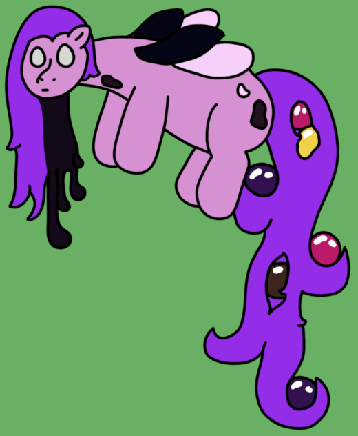

| Commonality | 100% (Threshold Conjuring) |
| Durability | 2/10 |
| Strength | Physical: 0/10 Psionic: 1/10 Magical: 3/10 |
| Specials | Flight Magical transfer Transmutation of arcane energies |
| Personality | Frenetic, but moody |
Weirs are psionomagical subpuppets conjured by Thresholds when high energy currents are present. They act as magical couriers and transmutators, converting excess magical energies into various useful forms. A group of Weirs is known as a conduit.
Wisps - Weirs
Weirs can be seen as a counterpart to Wisps, though there is some discourse on whether they are truly gangrenized Wisps, or if they are just a closely related conceptual organism. Regardless of exact relation, Weirs do support all the hallmarks of a gangrenized puppet: Their bodies are more robust, their spellcasting abilities are less so, and they also differ reasonably in size (standing at 1' 7", or 48cm). They also share the same "fibreglassy" texture, as well as a faint glow that they radiate consistently. Most notable are their long, curly tails, which are actually partially-solidified via keratinization. It is common to see coalesced globules of magic within the curls of a Weir's tail, being ferried where they need to go.
Weirs, superficially, act similar to Wisps, staying near their host Threshold in preparation for the necessity of a magical delivery. They are typically quite sedate in this waiting state, spending time either resting on their Threshold or chittering amongst themselves. When the order for magic comes in, however, Weirs work very hard to fill it: They swiftly attach to one of the Threshold's horns, drawing the necessary magic out in the form of up to eight globules, each one encompassing the approximate magic storage of a Trickster. They then take these globules (and potentially more of their fellows, if even more magic is required) and swiftly flit towards their target.
At the site of delivery is when the Weirs' second key ability comes in: Transmutation. Weirs are capable of converting magical energy between various usable forms, be it purified magic for regular puppets, gangrenous energy for gangrenous ones, plant magic for verdants or farming, healing water for medical purposes, elemental energies for maintaining elementals, or most surprisingly, raw Haetin. How exactly they know how to convert between these energies is unknown.
Weirs do not act particularly differently in or out of combat. They have a single job that they do well; the only difference is the circumstances it is done in. In battles, they will often bring energy to fatigued puppets, or they will stock Anchorages and Federations with spare raw Haetin.
Like Wisps, Weirs lack any true genetic code, being psionomagical creations. They also have replica internal organs, however, and they imitate the appearance of being partially gangrenized. Attempts to make a Weir manipulate itself or one of its other fellows into a different magical form, however, have proven utterly unsuccessful, so there is most certainly something anchoring Weirs to their current forms.
Weirs round out the Totem/Threshold dichotomy by providing a counterpart to Wisps, reflecting not only body, but ability as well. Weirs focus more on the logistical side of magic, abandoning spellcasting entirely for the sake of magical support. I was originally going to make a whole set of alt-elementals, but couldn't come up with enough ideas that I liked to commit to it.
